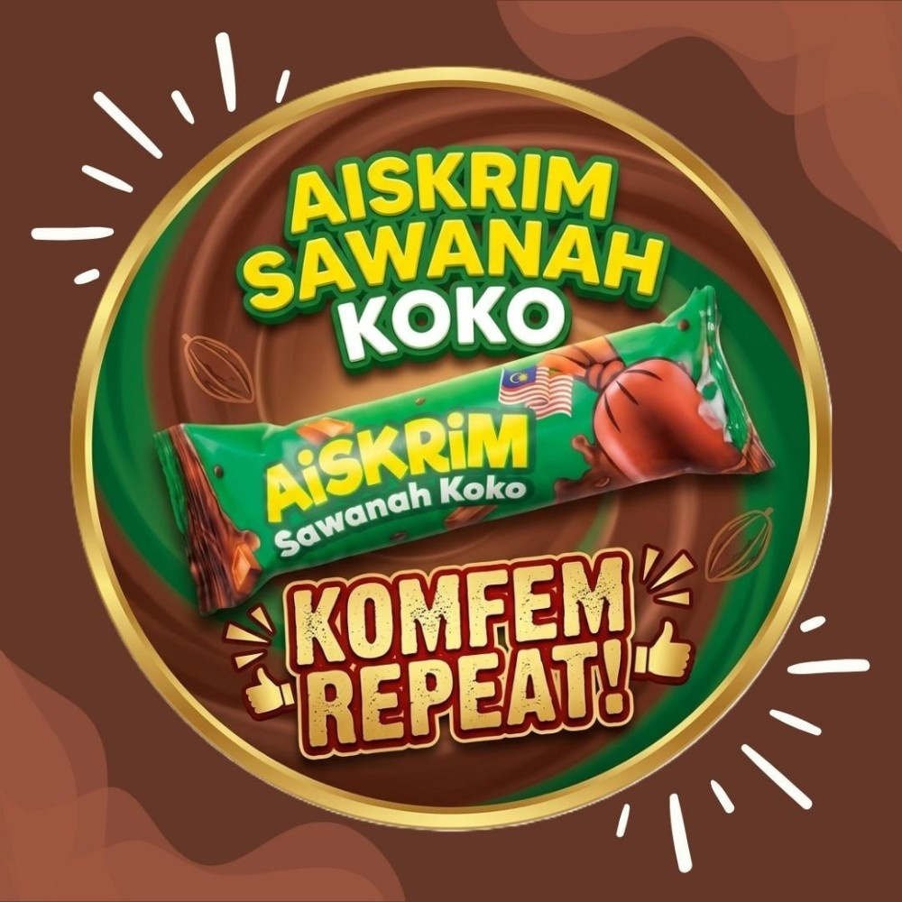

✨ KELAZATAN COKLAT SEBENAR • KOMFEM REPEAT! ✨

Dingin, Berkrim, & Penuh Rasa Koko!
Dibuat khas untuk peminat koko asli! Gabungan rasa coklat yang pekat, berkrim, dan kesegaran ais yang sejuk membuatkan anda pasti mahu lagi setiap kali menikmatinya.